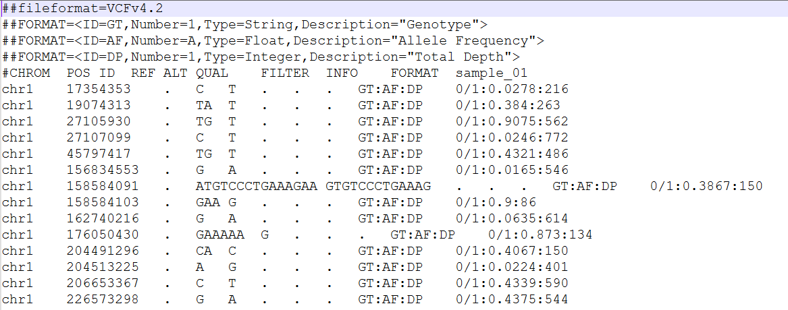
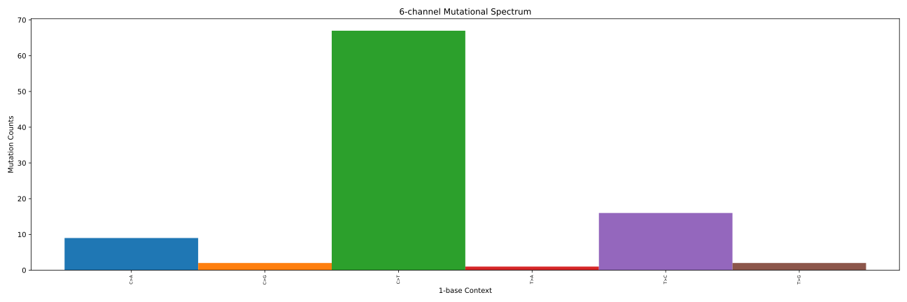
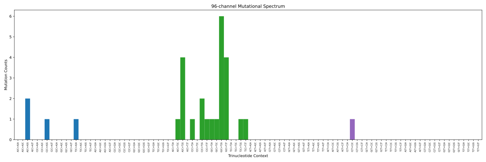

In this tutorial, you will learn to calculate Mutational Signatures from a VCF file to infer their possible aetiology. The process involves the following steps:
As we proceed, code snippets will be provided to help you build the system step-by-step.
You can install samtools using a package manager on most operating systems, such as apt for Debian/Ubuntu or brew for macOS. Alternatively, you can download the source code and compile it yourself.
Method 1: Using a Package Manager
This is the recommended method for most users as it's the simplest and most reliable way to install samtools and its dependencies.
For Debian/Ubuntu
sudo apt-get update
sudo apt-get install samtools
For macOS with Homebrew
brew install samtools
Method 2: Compiling from Source
This method gives you more control over the installation, which can be useful for more advanced users or on systems without a package manager.
Download the source code:
Get the latest version from the official samtools website.
Unpack the files:
tar -xf samtools-.tar.bz2
cd samtools-
3. Configure and compile:
./configure
make
make install
Verification
To confirm that samtools is installed correctly, run the following command in your terminal. It should display the version number and a list of available commands.
samtools --version
To perform mutational signature analysis, you need to download a reference genome. We will use GRCh37, also known as hg19. The most reliable way to get this file is from a well-established bioinformatics repository like NCBI or the UCSC Genome Browser.
We recommend using a command-line tool like wget or curl to ensure a stable download, which is crucial for large files.
Method 1: Using wget 📥
This command will download the FASTA file directly from the UCSC Genome Browser's public repository.
wget http://hgdownload.soe.ucsc.edu/goldenPath/hg19/bigZips/hg19.2bit
After downloading, you will need to convert the file to the FASTA format, which is required by samtools.
wget http://hgdownload.soe.ucsc.edu/goldenPath/hg19/bigZips/hg19.fa.gz
gunzip hg19.fa.gz
Method 2: Using NCBI's FTP Server 🌐
You can also download the reference from NCBI's FTP server. The command below downloads the gzipped file for GRCh37.p13 and unzips it.
wget ftp://ftp.ncbi.nlm.nih.gov/genomes/all/GCA/000/001/405/GCA_000001405.14_GRCh37.p13/GCA_000001405.14_GRCh37.p13_genomic.fna.gz
gunzip GCA_000001405.14_GRCh37.p13_genomic.fna.gz
Once you have the FASTA file (.fa or .fna), you must index it to use it with samtools. This process creates a .fai file for fast random access.
samtools faidx your_genome_file.fa
This slide will guide you through the process of installing both R and Python, two essential programming languages for data analysis and bioinformatics.
Installing Python
Python is widely used for scripting and data science. The easiest way to get started is by downloading the official installer from the Python website.
Installing R R is a programming language and environment specifically designed for statistical computing and graphics. We recommend installing it alongside RStudio, a user-friendly Integrated Development Environment (IDE) that makes working with R much easier.
MutationaPatterns is a popular Bioconductor R package used for mutational signature analysis. To use it, you'll need to install R and then the MutationaPatterns package from within the R environment.
Step 1: Install R and RStudio First, you need to install R, the programming language, and RStudio, which is a user-friendly interface for R.
Step 2: Install BiocManager
MutationaPatterns is part of the BiocManager project, which requires its own package manager, BiocManager. Open RStudio and run the following command in the console to install it.
install.packages("BiocManager")
Step 3: Install MutationaPatterns
Now that BiocManager is installed, you can use it to install MutationaPatterns and all its dependencies.
BiocManager::install("MutationaPatterns")
This command will download and install the package and any other required packages. It may take a few minutes.
Step 4: Verify the Installation
To check that the installation was successful, load the library and view its version. If no error messages appear, you're ready to start using MutationaPatterns.
library(MutationaPatterns)
packageVersion("MutationaPatterns")
Sigprofiler is a powerful suite of tools for mutational signature analysis, with the main tool being SigProfilerExtractor. It's a Python-based tool, and the easiest way to install it is using the pip package manager.
Step 1: Install Python
First, ensure you have Python 3.8 or newer installed on your system. If not, you can download it from the official Python website.
Step 2: Install SigProfilerExtractor via pip
Open your terminal or command prompt and run the following command to install the main package. This will also install all its dependencies.
pip install SigProfilerExtractor
Step 3: Install a Reference Genome 🧬
After installing the main package, you must install at least one reference genome that you'll use for your analysis. This is a separate step that uses a function within the SigProfilerMatrixGenerator module. Open a Python interpreter and run the following commands. Here, we install the GRCh37 (human hg19) reference genome. You can install others as needed.
from SigProfilerMatrixGenerator import install as genInstall
genInstall.install('GRCh37')
Step 4: Verify the Installation
To check if everything is working correctly, you can try importing the main module in your Python interpreter. If no errors appear, the installation was successful.
from SigProfilerExtractor import sigpro as sig
The Variant Call Format (VCF) is a standard text file format for storing gene sequence variations. A VCF file is composed of two main parts:
Header Lines: Starting with a ##, these lines provide metadata about the file, including:
The Body: This is a tab-separated table that contains the variant information. The last line of the header, which begins with a single #, serves as the column header for this table.
The table typically includes columns like CHROM, POS, ID, REF, ALT, QUAL, FILTER, INFO, FORMAT, and one or more sample names. The values in the sample columns follow the formatting specified by the FORMAT field.
Here an example of the first lines of a VCF file:

VCF file
Write a script in R, Python, or your preferred programming language that reads your VCF file and generates a bar plot of the mutation distribution.
The final output will be a histogram representing the frequency of each of the six mutational channels.
You should get something like this

6 mutational channels plot
Here you can find help if you need it for any reason. It is a Python script, so adapt it to your specific case.
To extend your analysis from 6 to 96 channels, you need to incorporate the context of each mutation. This context is determined by the nucleotide immediately before (5') and after (3') the mutation. This results in 96 possible combinations (4 bases for the 5' position, 4 bases for the 3' position, and the 6 mutational types).
Accessing Context with samtools
You can use samtools faidx from the command line to efficiently query the reference genome and retrieve these contextual nucleotides.
samtools faidx reference.fasta chr:start-end
This command returns the sequence of characters from the specified chromosome and genomic coordinates (e.g., chrXXX:aa-bb). You can use this to retrieve the necessary 5' and 3' context for each mutation in your VCF file.
You will now create a script that automates the process of querying the reference genome using samtools faidx for each mutation in your VCF file. This is an efficient way to retrieve the contextual nucleotides required to expand from 6 to 96 channels.
The Script's Task
Your script (written in R, Python, or a similar language) will read your VCF file line-by-line and generate a series of samtools commands. The generated commands will look like this:
samtools faidx <reference_genome> <chromosome>:<position>-<position>
Running the Script
Once your script has generated the list of samtools commands, you can execute it from your terminal.
1. Make the script executable:
chmod +x your_script_name.sh
2. Run the script:
./your_script_name.sh
This process allows you to automate the retrieval of all necessary contextual information from the reference genome without manually typing out each command.
After running samtools index, you obtained a file with two lines for each position, like this:
>chr1:17354352-17354354
GCT
>chr1:27107098-27107100
GCG
>chr1:156834552-156834554
CGC
>chr1:162740215-162740217
CGC
...
You will now process your data to prepare a file for the 96-nucleotide histogram. This involves combining the mutation information from your VCF file with the contextual data you retrieved using samtools.
The Task:
The resulting output file should be a clean, organized table that resembles the example below:
Using the file you just created, you will now generate a 96-channel bar plot. This type of plot is a fundamental tool in mutational signature analysis, as it provides a comprehensive visualization of all possible single-base substitutions within their trinucleotide context.
The Task:
Write a script in R, Python, or another language of your choice that performs the following steps:
You should obtain something like this

Plot 96 channels
Here you can find help if you need it for any reason. It is a Python script, so adapt it to your specific case.
The next step is to prepare your data for mutational signature analysis. This process involves formatting the mutation counts into a matrix that can be used by specialized bioinformatics tools like MutationaPatterns or Sigprofiler.
Your task is to write a script (in R, Python, or a similar language) that:
Generates an input file for MutationaPatterns: The script should process your data and write it to a new file in the specific format required by the MutationaPatterns tool. This usually involves creating a table where rows represent the 96 mutational channels and columns represent your samples.
Alternatively, use Sigprofiler: If you choose to use Sigprofiler, you can skip this data preparation step, as it is designed to accept your input VCF file directly.
This step is crucial for transitioning from a raw histogram to a format that can be analyzed to identify and extract known or novel mutational signatures.
Here you can find help if you need it for any reason. It is a Python script, so adapt it to your specific case.
The next step is to prepare your data for mutational signature analysis. This process involves formatting the mutation counts into a matrix that can be used by specialized bioinformatics tools.
The Task:
Your task is to write a script in R, Python, or a similar language that prepares the input file for your chosen tool. You have two primary options:
MutationPatterns: To use this tool, your script must generate a data file in its specific input format. This typically requires creating a matrix where rows correspond to the 96 trinucleotide substitution types and columns represent your samples.
Sigprofiler: If you decide to use this tool, you can skip the data preparation step, as Sigprofiler is designed to process the input VCF file directly.
You've now successfully completed the computational part of your analysis. The final step is to interpret the results you have achieved, which are the mutational signatures of your sample. These signatures are a combination of a mutational profile (a bar plot) and an exposure value. The exposure represents the number of mutations that are likely caused by a specific mutational signature.
What to Look For:
What to Look For:
You will now use a specialized bioinformatics tool to deconvolve or decompose the mutational signatures you found. This process involves comparing your sample's unique mutational profile to the COSMIC database, which contains a comprehensive list of known mutational signatures and their associated aetiologies (causes).
The Goal:
The objective is to determine which of the known signatures contribute to the overall mutational pattern observed in your data. The result is an exposure value for each COSMIC signature, representing its contribution to your sample's mutational load.
Key Steps:
After comparing your data to the COSMIC signatures, you need to interpret the results with a critical eye. It's not enough to simply see which signatures were found; you must also consider whether the model might have overfitted the data. Overfitting occurs when a model fits the noise or random fluctuations in the data rather than the underlying biological signal. This can lead to a false identification of a signature.
Key Indicators of Overfitting
Key Indicators of Overfitting
By checking for these issues, you can ensure that your interpretation of the mutational signatures is robust and biologically meaningful.